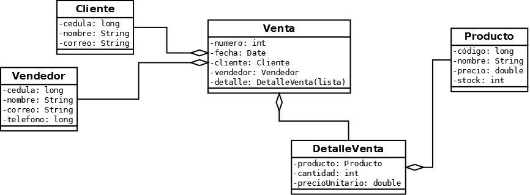
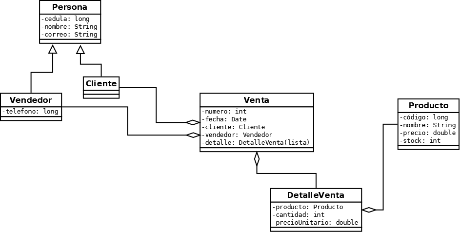
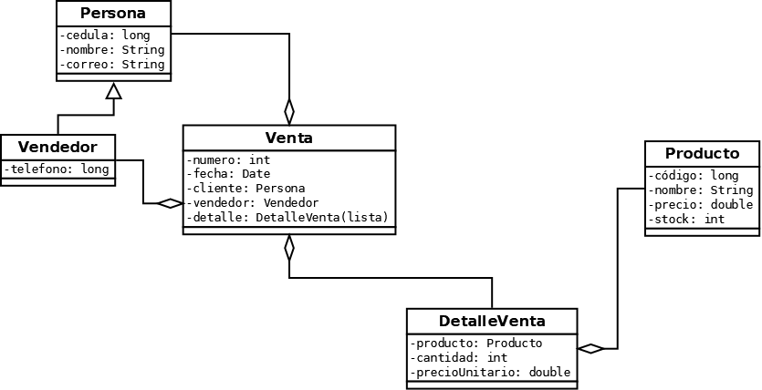

Volvemos al modelo de la tienda
En los dos SCORM anteriores aprendimos a identificar entidades, definir atributos y distribuir responsabilidades. Ahora necesitamos precisar qué significa cada línea que une nuestras clases.


La pregunta que orienta esta lección es: ¿un objeto simplemente conoce a otro, lo agrupa o es responsable de su existencia?
Asociación: un objeto conoce a otro
Una asociación representa un vínculo entre objetos. No afirma necesariamente quién los crea, quién es su propietario o cuánto tiempo viven.
asociación
En la tienda una venta corresponde a un cliente. En una implementación Java podemos representarlo con un atributo que guarde una referencia a un objeto de la clase Cliente.
public class Venta {
private int numero;
private Cliente cliente;
public Venta(int numero, Cliente cliente) {
this.numero = numero;
this.cliente = cliente;
}
}Multiplicidad: ¿cuántos objetos participan?
En un sistema real debemos determinar, por ejemplo, si un cliente puede realizar muchas ventas y si cada venta corresponde a un único cliente. En UML esto suele expresarse con 1, 0..1 o 0..*.
Los diagramas proporcionados no explicitan todas las multiplicidades, por lo que las siguientes afirmaciones se toman como supuestos didácticos del caso, no como datos ya escritos en el UML.
Agregación: agrupar sin depender para existir
La agregación compartida es una asociación todo–parte: el «todo» reúne elementos que pueden existir independientemente de él. En UML se representa con un rombo blanco junto al todo.
agrupa
Un Catalogo puede agrupar productos, pero eliminar ese catálogo no tendría por qué eliminar cada producto del inventario. Es un ejemplo pedagógico nuevo, no una clase presente en los UML originales.
import java.util.List;
public class Catalogo {
private String nombre;
private List<Producto> productos;
public Catalogo(String nombre, List<Producto> productos) {
this.nombre = nombre;
this.productos = productos;
}
}El atributo List<Producto> anticipa la siguiente lección, pero aquí lo importante no es su funcionamiento, sino qué significa la relación. Una lista por sí sola no demuestra que exista agregación.
Composición: partes que pertenecen a un todo
Una composición es una relación todo–parte fuerte. Cada parte pertenece como máximo a un todo compuesto a la vez, y el todo es responsable de su ciclo de vida dentro del modelo.
contiene
Para «La Viñeta», podemos decidir que cada detalle es un renglón de una venta concreta: no debe pertenecer simultáneamente a otra venta. Si eliminamos definitivamente una venta, sus detalles dejan de tener sentido en este modelo.
import java.util.ArrayList;
import java.util.List;
public class Venta {
private List<DetalleVenta> detalles;
public Venta() {
detalles = new ArrayList<>();
}
public void agregarProducto(Producto producto,
int cantidad,
double precioUnitario) {
DetalleVenta detalle =
new DetalleVenta(producto, cantidad, precioUnitario);
detalles.add(detalle);
}
}En este diseño Venta crea el DetalleVenta. Esa decisión ayuda a expresar el control del todo sobre la parte, aunque composición no significa simplemente «usar new dentro de la clase». La regla sobre propiedad y vida de las partes es lo fundamental.
Venta creada → agrega detalles → conserva detalles → venta eliminada definitivamente → sus detalles dejan de pertenecer al modelo.
DetalleVenta. El detalle se asocia al producto, pero no lo posee mediante composición.Tres relaciones, tres preguntas diferentes
Asociación
¿Se conocen?
Cliente ↔ Venta
No impone una relación de ciclo de vida.
UML: línea simple.
Agregación
¿Uno agrupa a otros independientes?
Catálogo ◇— Producto
La parte puede existir fuera del conjunto.
UML: rombo blanco.
Composición
¿La parte pertenece fuertemente a un todo?
Venta ◆— DetalleVenta
La parte depende del ciclo de vida del todo definido por el modelo.
UML: rombo negro.
| Pregunta | Asociación | Agregación | Composición |
|---|---|---|---|
| ¿Expresa todo–parte? | No necesariamente | Sí | Sí |
| ¿Puede la parte tener vida independiente? | La relación no lo define | Sí | Depende del todo en el modelo |
| ¿Símbolo UML? | Línea | ◇ | ◆ |
ArrayList no convierte automáticamente la relación en agregación o composición. Primero razonamos sobre el problema; después elegimos cómo programarlo.Herencia: cuando el modelo necesita evolucionar
Las asociaciones describen vínculos entre objetos. La herencia expresa que un tipo de objeto es un tipo más específico de otro. Pero no empezamos dibujando flechas: primero aparece un problema de diseño.
Primer intento · Sin herencia: repetimos información
Agregamos una clase Vendedor y la relacionamos con Venta. Funciona, pero Cliente y Vendedor repiten cedula, nombre y correo. Si cambiamos cómo representamos esos datos, tendremos que revisar ambas clases.

Segundo intento · Herencia: extraemos lo común
Identificamos lo que comparten ambas clases y creamos Persona con cedula, nombre y correo. Después hacemos que Cliente y Vendedor hereden de Persona. El teléfono queda en Vendedor, porque es su dato específico.

public class Persona {
private long cedula;
private String nombre;
private String correo;
public Persona(long cedula, String nombre, String correo) {
this.cedula = cedula;
this.nombre = nombre;
this.correo = correo;
}
}
public class Vendedor extends Persona {
private long telefono;
public Vendedor(long cedula, String nombre,
String correo, long telefono) {
super(cedula, nombre, correo);
this.telefono = telefono;
}
}extends
Expresa la relación «es un»: un vendedor es una persona. En UML, el triángulo vacío apunta hacia la superclase Persona.
super(...)
Invoca el constructor de Persona para inicializar sus datos comunes. No copia los atributos en Vendedor.
Tercer intento · Simplificamos: ¿necesitamos Cliente como subclase?
Al revisar el modelo advertimos que Cliente no tiene atributos ni comportamientos propios en este sistema. Solo hereda lo que ya define Persona. Por ahora, mantener una subclase vacía agrega complejidad sin resolver una necesidad real.
Decidimos eliminar la clase Cliente y representar a los clientes mediante objetos Persona. Conservamos Vendedor extends Persona, porque su teléfono y su función específica justifican una especialización en este modelo.

Venta referencia a Persona como cliente y a Vendedor como vendedor.public class Venta {
private Persona cliente;
private Vendedor vendedor;
// Los demás atributos y métodos se incorporan
// a partir del modelo de la tienda.
}Cliente en esta etapa.Herencia no es asociación
Un Vendedor es una Persona; por eso hereda de ella. En cambio, una Venta tiene un cliente y un vendedor: esas son relaciones entre objetos, no relaciones de herencia.
Decisión abierta: si más adelante los clientes necesitan reglas o comportamientos específicos, podremos revisar la conveniencia de recuperar Cliente como clase especializada. El diseño responde a los requerimientos presentes, no a todas las posibilidades futuras.
El UML nos obliga a justificar nuestras elecciones
En nuestros UML de partida
Se representan Cliente, Venta, Producto y DetalleVenta. La asociación entre Venta y Producto lleva información propia en DetalleVenta.
Conservamos las imágenes sin modificar símbolos ni inventar multiplicidades dibujadas.
En una versión posterior del diseño
Podemos establecer una composición Venta–DetalleVenta, una asociación DetalleVenta–Producto y, si el dominio lo necesita, introducir tipos generales y especializados mediante herencia.
Estas son decisiones justificadas, no correcciones silenciosas de los diagramas originales.
Progresión del curso
Hoy estudiaremos la semántica de las relaciones y la herencia. En el siguiente SCORM aprenderemos a representar asociaciones múltiples mediante List y a elegir entre ArrayList y LinkedList. Allí introduciremos también el polimorfismo de colecciones y una primera mirada a Set, Map, estructuras ordenadas y métodos de ordenación.
Comprueba si distingues las relaciones
Situación 1: Una venta utiliza un cliente que permanece en el sistema cuando se elimina esa venta. ¿Qué relación describe mejor este vínculo?
Situación 2: Un detalle no tiene sentido sin la venta a la que pertenece y la aplicación decide que una venta controla la vida de sus detalles. ¿Qué relación estamos modelando?
Situación 3: En una ampliación justificada del sistema, Cliente especializa Persona. ¿Qué palabra Java expresa esa relación?
Siguiente: SCORM 04 — Colecciones Java, interfaz List, implementaciones, otras colecciones y polimorfismo.
Explora, aprende, crea.